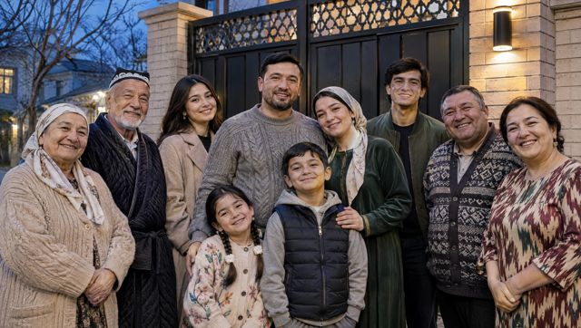
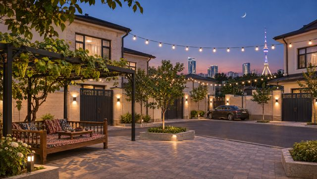
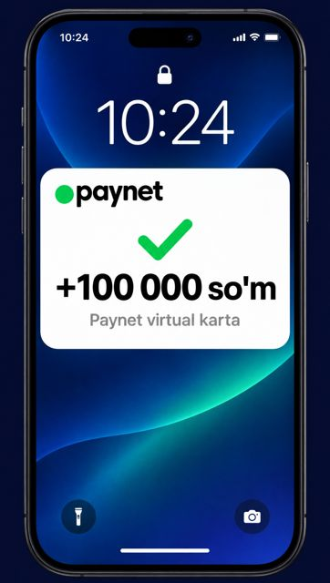
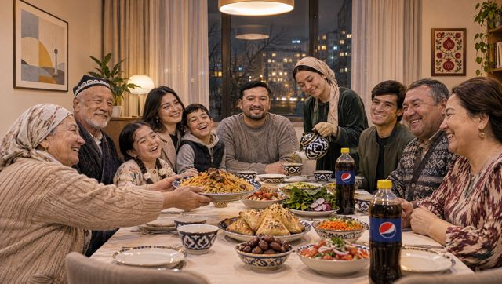
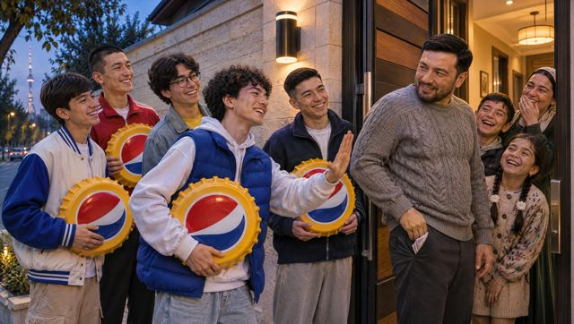
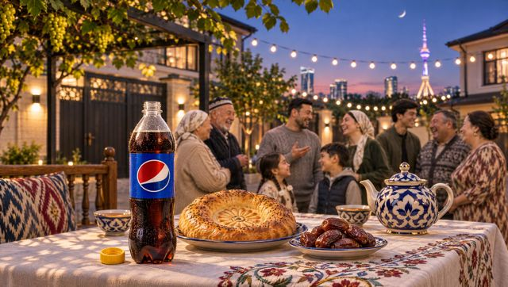

Pepsi Ramazon «Махалля» — кит для Seedance 2.5
6 клипов ≈ 44 с + пэкшот. Песня: 120 BPM. Тайминги строк определены анализом трека, ±0,3 с.
Скачать всё одним архивомМонтаж (по мастеру master_door)
| Время, с | Клип | Звук |
|---|---|---|
| 0,00–9,95 | 1 · Ифтар | строки 1–2 за дверью |
| 9,95–16,95 | 2 · Дверь | пауза-жесты, строки 3–4 |
| 16,95–26,82 | 3 · Улица | дробь, дроп, куплет 2 |
| 26,82–34,74 | 4 · Призы (продление) | куплет 3, Kia |
| 34,74–39,05 | 5 · Финал | Op chiqing, удар на 39,05 |
| 39,05–44 | 6 · Стол + пэкшот | хвост удара, шумы |
Звук Seedance в монтаже глушим, кладём только мастер. Шумы из клипов (смех, шаги) можно подмешать.
Аудио
- master_door.mp3
Мастер для монтажа: 1–2 строки «за дверью» + пауза 3 с (40,7 с) - master_door.wav
То же в WAV - master_pause.mp3
Мастер без фильтра двери (если хочешь сделать глухой звук сам) - audio_C2_door.mp3
Аудио-реф клипа 2 (7 с: 3 с тишины + строки 3–4) - audio_C3a_street.mp3
Аудио-реф клипа 3 (10 с: дробь + дроп + куплет 2) - audio_C3b_prizes.mp3
Аудио-реф клипа 4 (8 с: куплет про призы) - audio_C4_final.mp3
Аудио-реф клипа 5 (6 с: финал + последний удар)
Референсы

R01_bandРебята (5 шт., 18 лет)


R02_neighboursХозяин, семья, соседи


R03_locationМахалля (локация)

R04_drums_doirasБарабаны-банки и дойры-крышки

R05_pepsi_capБутылка и жёлтая крышка с кодом

R06_paynet_codePaynet: ввод кода


R07_paynet_winPaynet: выигрыш +100 000

R08_kia_podiumKia на подиуме с бантом


F1_start_iftarСтарт-кадр клипа 1


F2_start_doorСтарт-кадр клипа 2


F5_start_tableСтарт-кадр клипа 6
Клипы и промпты
Клип 1 · Ифтар · 10 с
- Seedance 2.5 · Omni Reference · 16:9 · 10 с · звук вкл
- Старт-кадр: F1_start_iftar
- @image1 = R02_neighbours
- Аудио-реф: нет (песню кладём в монтаже)
Slow cinematic shot at table height inside an ordinary modern Tashkent home during the evening iftar, then a handheld follow of the father to the front door. ACTIVE REFERENCES Start frame — the iftar table exactly as in the uploaded first frame: same room, family, food and light. 100% matches. @image1 — the father (about 38, short neat beard, grey cable-knit sweater) and his family. 100% matches the reference. SCENE A big family breaks the fast at a long table with plov, non, samsa, dates and Pepsi bottles with yellow caps. Muffled chanting of young men comes from outside the front door. The father recognises the old Ramadan door-song, smiles, gets up and walks to the door, feeling his trouser pocket for money on the way. TIMELINE 0–3s — The family eats and talks. The grandmother passes a dish of plov, the wife pours tea, a kid reaches for a date. At 2s everyone pauses and turns their heads toward the hallway, listening. 3–5s — The father's face lights up with a knowing smile; he puts down his napkin and stands up from the head of the table. The grandfather chuckles and nods. 5–9s — The camera follows the father from behind at shoulder height as he walks out of the dining room into a short bright hallway toward a modern front door with a frosted glass panel glowing cool blue. On the way he pats his trouser pocket twice, checking for money. Two kids slip off their chairs and run after him. 9–10s — He reaches the door and puts his hand on the handle. CAMERA Static at table height for the first 5s, 35mm. At 5s it starts a smooth handheld follow behind the father at walking pace, keeping him centred; by 7s the dining table is behind us and the hallway fills the frame. Level horizon. No zoom. LIGHTING Warm golden practical light (3000K) in the dining room, softer light in the hallway, the frosted door glass glowing cool blue (7000K) from the dusk outside. AUDIO Room ambience: cutlery, tea pouring, soft family murmurs without clear words, kids' laughter, footsteps. No music. Nobody on screen sings. OUTPUT 16:9, 10 seconds, real-time speed, photoreal cinematic commercial, subtle film grain. No subtitles. No on-screen text.
Клип 2 · Дверь: «не-не-не» + строки 3–4 · 7 с
- Seedance 2.5 · Omni Reference · 16:9 · 7 с · звук вкл
- Старт-кадр: F2_start_door
- @image1 = R01_band · @image2 = R02_neighbours · @image3 = R05_pepsi_cap
- @audio1 = audio_C2_door.mp3
Medium shot from outside at chest height: the open front door of a modern Tashkent house at blue hour, the father in the doorway facing five young men on the step. SILENCE 0–3s: for the first three seconds nobody speaks or sings. Mouths stay closed, the whole exchange is pure gesture. The chanting starts only at 3s, in sync with @audio1. ACTIVE REFERENCES Start frame — the doorway exactly as in the uploaded first frame. 100% matches. @image1 — the five boys: faces, hair and outfits exactly as in the reference, all 18 years old, boyish faces, no facial hair. Lead boy: curly hair, blue puffer vest over a white hoodie. They hold round doira drums shaped like giant yellow Pepsi caps. @image2 — the father (about 38, short neat beard, grey cable-knit sweater) and his family. 100% matches. @image3 — the small yellow Pepsi screw cap with the code printed inside. Real size about 3 cm, it fits between two fingers. @audio1 — the soundtrack: 3 seconds of silence, then the boys' chant. TIMELINE 0–1s — The father pulls a few folded banknotes from his trouser pocket and holds them out to the boys with a generous smile. 1–3s — All five boys grin and, in unison, shake their heads and wave their open palms side to side: no, no, no. The curly-haired lead boy gently pushes the father's hand with the money back to him, then points past his shoulder into the house, at the iftar table where Pepsi bottles stand. The father freezes, glances back at the table, then breaks into a wide smile; behind him his wife and kids laugh. 3–5s — The boys chant together in Uzbek, in sync with @audio1: "Pepsining qopqog'i bor". The lead boy slaps his yellow cap doira on the rhyme. 5–7s — They chant: "Qopqoq ostida kodi bor". The boy in the denim jacket holds up the small yellow Pepsi cap between two fingers and flips it to show the code inside. The father laughs and raises both hands in surrender. CAMERA Chest height, 40mm, a slow 10 cm push-in toward the doorway over the whole clip. Level horizon. No zoom. LIGHTING Warm interior light (3000K) spilling out of the door onto the boys' faces, cool blue-hour street light (7000K) on their backs, a warm LED wall lamp beside the door. AUDIO @audio1 as the voice track: silence 0–3s, then the chant. Quiet street ambience under it, the family's laughter at 2–3s. OUTPUT 16:9, 7 seconds, real-time speed, photoreal cinematic commercial. No subtitles. No on-screen text.
Клип 3 · Улица, один дубль: дробь → дроп → куплет 2 · 10 с
- Seedance 2.5 · Omni Reference · 16:9 · 10 с · звук вкл · без старт-кадра
- @image1 = R01_band · @image2 = R02_neighbours · @image3 = R03_location
- @image4 = R04_drums_doiras · @image5 = R05_pepsi_cap · @image6 = R06_paynet_code
- @audio1 = audio_C3a_street.mp3
One continuous handheld gimbal shot at chest height, moving forward without a single cut: from the front door of a modern Tashkent house out onto the paved square of the mahalla, where the neighbourhood comes alive around five young drummers. ONE TAKE: one uninterrupted camera move. Each beat below is a new spot along the camera's path; background life keeps going in every frame. ACTIVE REFERENCES @image1 — the five boys exactly as in the reference, all 18, boyish faces, no facial hair. @image2 — the neighbours exactly as in the reference: plump uncle, auntie, girl in a beige coat, young man in a dark green bomber, grandparents, kids. @image3 — the modern Tashkent mahalla exactly as in the reference. @image4 — the giant blue Pepsi-can drums and the yellow Pepsi-cap doiras exactly as in the reference, but without the sticks: every drum is played with bare hands. @image5 — the Pepsi bottle and its small coin-sized yellow cap with the code inside. @image6 — the Paynet app screen; use exactly this screen and logo. @audio1 — the soundtrack: snare roll, a massive drum drop at 2s, then the chant. The boys drum and chant in sync with it. TIMELINE 0–2s — Snare roll. The five boys spin away from the doorstep, run down the short path and out through the open metal gate; the camera runs right behind them. Windows light up along the street. 2–4s — Drop. The camera bursts onto the square: three giant Pepsi-can drums stand on the paving. The tall boy in the red track jacket slams the biggest drum with both open palms exactly on the downbeat; two boys pound the other can drums with their hands, the rest slap their yellow cap doiras, all chanting "Sariq qopqoqni oching". At a gate on the left the plump uncle unscrews the yellow cap of a Pepsi bottle. 4–6s — Chant: "QR kodni skanerlang". The camera moves past the girl in the beige coat as she points her phone at the QR code on a Pepsi label; behind her two neighbours hug; an old man switches on the lamp at his gate; a woman pulls a curtain aside in a lit window. 6–8s — Chant: "Kodni Paynetga kiriting". The uncle hands the small yellow cap to the young man in the green bomber; the camera settles over his shoulder as he types the code from the cap into the Paynet app from @image6. 8–10s — Chant: "Omadingizni bir sinang!". He taps the green button and crosses his fingers; behind him more families step out of their gates pulling on jackets, kids run toward the drums. PHYSICS Bare hands strike the drumheads flat with open palms and bounce off; the skins ripple on every hit, the beats land exactly on the music. CAMERA Handheld gimbal at chest height, 32mm, moving forward at 2–3 m per second, curving slightly right around the square. By 3s the house door is out of frame for good. Level horizon. No zoom. LIGHTING Blue hour after sunset: deep blue sky, warm LED lamps at every gate (3000K), zigzag string lights over the square, warm windows. Light haze that glows around every lamp. AUDIO @audio1 as the music and chant. On top: gates opening, footsteps, cheering. OUTPUT 16:9, 10 seconds, real-time speed, photoreal cinematic commercial, controlled-chaos energy. No drumsticks. No subtitles. No on-screen text except the phone screen.
Клип 4 · Призы и Kia — продление клипа 3 · 8 с
- Seedance 2.5 · Extend (вперёд) от клипа 3 · 8 с · звук вкл
- @video1 = клип 3
- @image1 = R07_paynet_win · @image2 = R08_kia_podium
- @audio1 = audio_C3b_prizes.mp3
- Если Extend не даёт добавить картинки/аудио: Omni Reference, старт-кадр = последний кадр клипа 3, рефы те же, первую строку промпта оставь.
Continue @video1 as the same unbroken handheld shot: the camera keeps moving through the mahalla square at blue hour, catching three wins at once, then the grand prize lights up. ONE TAKE: no cut at the start or anywhere; the first frame continues the last frame of @video1. ACTIVE REFERENCES @video1 — the shot to continue: same people, place, light and camera. @image1 — the Paynet win notification '+100 000 so'm'. Use exactly this screen. @image2 — the grand prize: a white Kia Sonet Prime on a round glossy podium with an LED rim and a huge red satin bow on the roof. 100% matches. @audio1 — the soundtrack for this part; the boys chant and drum in sync with it. TIMELINE 0–2s — Chant: "Bir yarim million yutuq bor". The camera drifts left off the young man's shoulder: a few steps away the plump uncle shows his phone (+5 000 so'm) to the auntie and they laugh; further back neighbours jump and clap around a woman holding up her phone (+50 000 so'm). At a gate the girl in the beige coat hands a Pepsi bottle to an elderly neighbour, who takes it with both hands. 2–4s — Chant: "Besh mingdan yuz minggacha bor!". The camera swings back to the young man in the green bomber: his phone shows the notification from @image1; he grins wide and shows it to his friends. 4–6s — Chant: "Kia Sonet Prime ham bor". The camera rises to head height and turns toward the five boys drumming with bare hands at the edge of the square; behind them the white Kia from @image2 stands on its podium. Its LED headlights flash on with the beat; the beams cut through the haze and silhouette the boys. 6–8s — Chant: "Sakkizta mashina bor!". The neighbours turn toward the light, cheer and raise their phones; the camera keeps rising above the crowd. At 7.6s the camera whips fast to the right with heavy motion blur. CAMERA Same gimbal as @video1, 32mm, continuous movement, level horizon. Rises from chest height to about 3 m between 4s and 8s. Whip pan only in the last 0.4s. No zoom. LIGHTING Same blue hour. From 4s the Kia headlights are the brightest source: the beams glow in the haze and rim-light the boys. AUDIO @audio1 as the music and chant; cheers, a notification ping at 2.5s. OUTPUT 16:9, 8 seconds, real-time speed, photoreal cinematic commercial. No drumsticks. No subtitles. No on-screen text except the phone screens.
Клип 5 · Финал: Pepsi для ребят · 6 с
- Seedance 2.5 · Omni Reference · 16:9 · 6 с · звук вкл · без старт-кадра
- @image1 = R01_band · @image2 = R02_neighbours · @image3 = R03_location
- @audio1 = audio_C4_final.mp3
Handheld shot at chest height in front of the same modern front door on the mahalla square, landing out of a fast whip pan: the father steps out with Pepsi for the boys and the whole neighbourhood raises their bottles. ACTIVE REFERENCES @image1 — the five boys exactly as in the reference, all 18, boyish faces, no facial hair. Lead boy: curly hair, blue puffer vest over a white hoodie. @image2 — the father (about 38, short neat beard, grey cable-knit sweater) and the neighbours. 100% matches. @image3 — the mahalla: the house front door with light stone cladding and an LED wall lamp, string lights over the square. 100% matches. @audio1 — the soundtrack for this part; the chant and the drum hits are in sync with it. TIMELINE 0–0.5s — The frame arrives out of a fast whip pan from the left; heavy motion blur settles on the front door. 0.5–2.4s — Chant: "Op chiqing, op chiqing". The father steps out of the door with an armful of cold Pepsi bottles with yellow caps held against his chest and walks straight to the curly-haired lead boy; the boys cheer him on. 2.4–3.4s — A beat of silence in the music. The father holds out a bottle; the lead boy takes it, they grin at each other and the boy puts a hand on his heart. The father passes the other bottles to the boys. 3.4–4.3s — Chant: "Pepsi olib chiqing!". The boys and all the neighbours around raise their Pepsi bottles high; kids jump. 4.3–6s — The final drum hit at 4.3s; everyone holds the cheer, laughing, under the glowing string lights. CAMERA Handheld at chest height, 35mm. After the whip pan settles at 0.5s it holds the father and the lead boy in a two-shot with a slow 1 m arc to the right. Level horizon. No zoom. LIGHTING Blue hour, warm light from the open door and the LED wall lamp, string lights overhead. AUDIO @audio1 as the music and chant; cheering and laughter. OUTPUT 16:9, 6 seconds, real-time speed, photoreal cinematic commercial. No subtitles. No on-screen text.
Клип 6 · Финальный кадр: стол · 5 с
- Seedance 2.5 · Omni Reference · 16:9 · 5 с · звук вкл
- Старт-кадр: F5_start_table
- Без рефов и без аудио-рефа
Slow push-in on a laid table in a mahalla courtyard at blue hour — the calm final frame. ACTIVE REFERENCES Start frame — the table exactly as in the uploaded first frame: the Pepsi bottle, the yellow cap lying next to it, the round non, the plate of dates, the blue-and-white teapot, the neighbours in the background. 100% matches. TIMELINE 0–5s — The camera glides slowly toward the Pepsi bottle and the yellow cap. Condensation drops slide down the bottle, steam rises from the teacups. Behind the table, in soft warm bokeh, the neighbours stand in small groups, talk and laugh; a kid runs across; the string lights twinkle. CAMERA Slider push-in at table height, 50mm, 30 cm over 5 seconds, ending with the bottle and the cap large in frame. Shallow depth of field, focus stays on the bottle. No zoom. LIGHTING Warm practical light on the table (3000K), blue hour behind, string-light bokeh. AUDIO Soft ambience: distant laughter and talk, a teacup set down. No music. OUTPUT 16:9, 5 seconds, real-time speed, photoreal premium commercial look. No subtitles. No on-screen text.
Порядок
- Сначала черновики 480p (draft) по всем клипам, удачные финалим в 1080p.
- Клип 4 — продление клипа 3: делай его только после того, как клип 3 устроит.
- Если Seedance начнёт вклеивать картинку-реф целиком, убери из клипа 3 @image5 и @image6, а их содержание оставь словами.